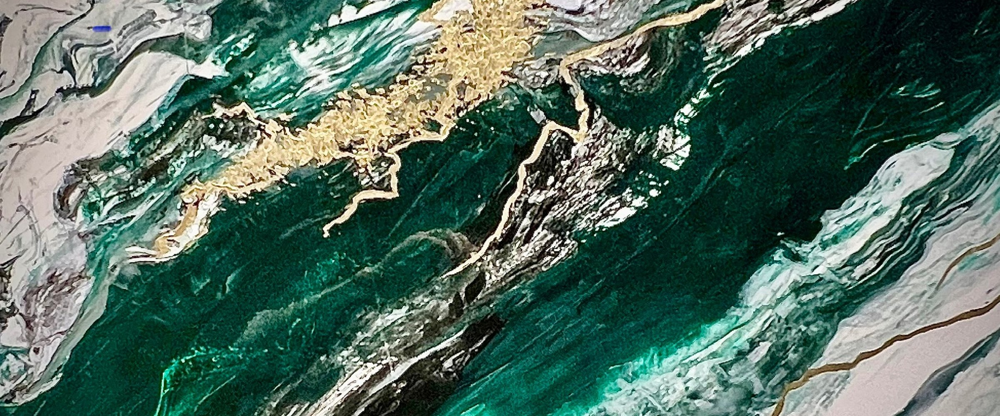
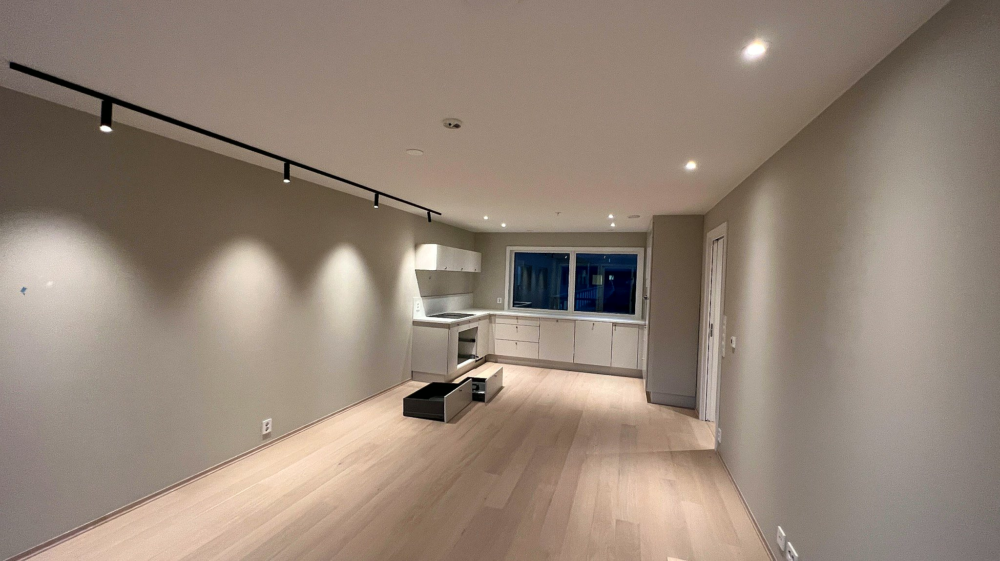
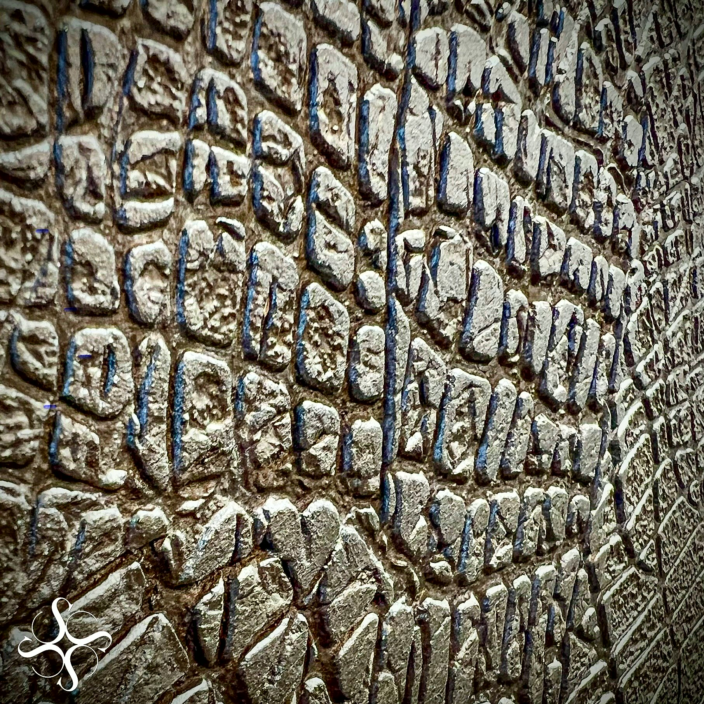
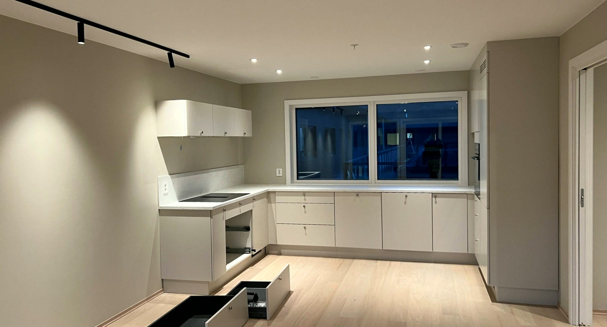
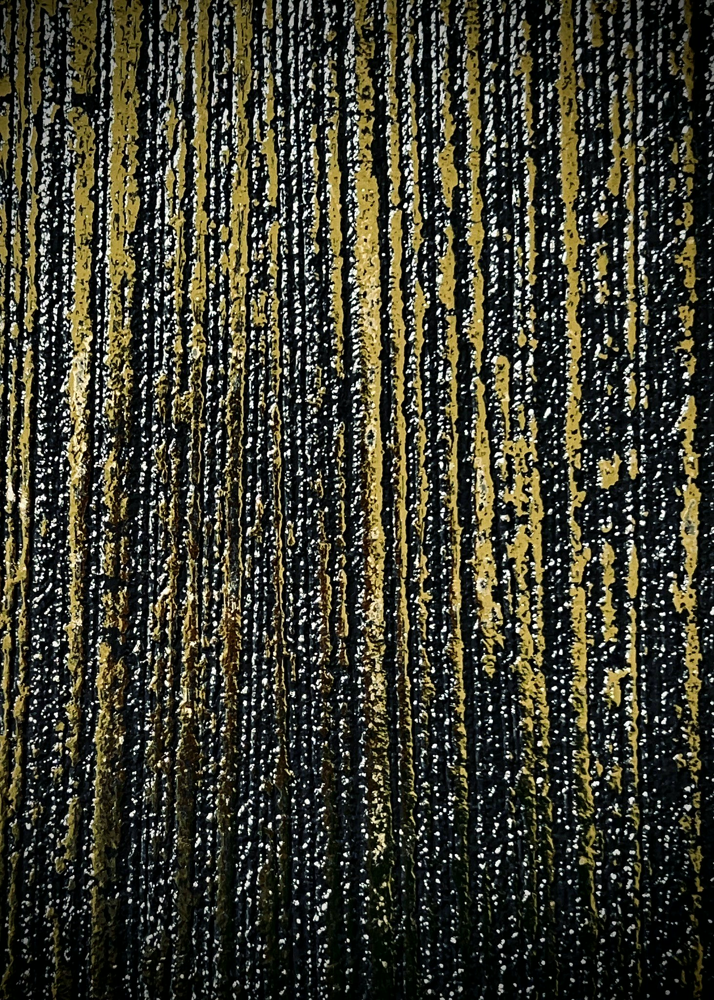
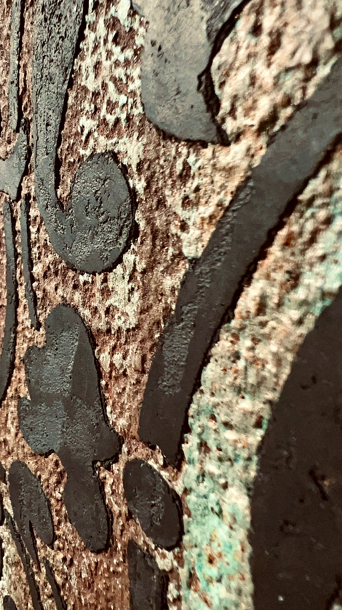

Tynki dekoracyjne · Kędzierzyn-Koźle
Ściana, na którą patrzy się jak na obraz
Tynki dekoracyjne kładziemy ręcznie, warstwa po warstwie - efekt marmuru, surowego betonu, kamienia albo przetartego złota.
Zadzwoń teraz +48 733 798 878 Ocena 5,0 w Google
- Bezpłatna wycena
- Dojazd: Kędzierzyn-Koźle i okolice
- Gwarancja na robociznę
„Wczoraj miałam malowany balkon oraz przedpokój.”Barbara Pokorska
„Polecam.”Danuta Lisowska
Jak pracujemy
Wiesz, na czym stoisz - na każdym etapie
Od pierwszego telefonu do odbioru roboty - krok po kroku.
- 01
Bezpłatna wycena
Przyjeżdżamy, oglądamy, doradzamy. Bez opłat i bez zobowiązań.
- 02
Kosztorys i termin
Wycena z terminem, czarno na białym - przed startem, nie po fakcie.
- 03
Realizacja
Praca idzie tak, jak się umówiliśmy - i w terminie.
- 04
Odbiór i gwarancja
Oglądasz gotową robotę i dostajesz gwarancję.
Realizacje
Nasze ściany
Zdjęcia z naszych realizacji - zbliżenia na strukturę i wnętrza, w których te ściany na co dzień stoją.





Co robimy
Tynki dekoracyjne i wykończenia wnętrz
Roboty, które robimy regularnie - opisane jedna po drugiej.
- Tynk dekoracyjny w efekcie marmuruNajbardziej rozpoznawalna rzecz, jaką robimy. Ciemna zieleń, grafit albo biel przechodzą jedna w drugą, a po nich idą złote żyły.Wycena →
- Beton architektoniczny i surowe wykończeniaGładka, chłodna płaszczyzna w odcieniach szarości - bez płyt i bez kotew, kładziona bezpośrednio na ścianę.Wycena →
- Efekt kamienia i spękanej skałyGrube, wyczuwalne pod ręką struktury: łupek, spękany kamień, skorodowana blacha.Wycena →
- Złoto, perła i metaliczne przetarciaŚciany, które zmieniają się razem ze światłem: złote i perłowe przetarcia, drobny brokat, głęboka czerń z kolorowym połyskiem.Wycena →
- Gładzie, malowanie i przygotowanie ścianDekoracja trzyma się tylko na równym podłożu, więc gładzie i malowanie robimy sami.Wycena →
- Wykończenia wnętrz od stanu deweloperskiegoŚciany działowe z płyty, sufity, zabudowy i całe wnętrza doprowadzone do wprowadzki.Wycena →
Opinie
Co mówią klienci
Wczoraj miałam malowany balkon oraz przedpokój. Wszystko czyściutko, oklejone taśmą, żeby się nie zabrudziło. Z czystym sumieniem polecam.Barbara Pokorska
Polecam. Tanio, ładnie i szybko wykonuje swoją pracę.Danuta Lisowska
Współpraca
Potrzebujesz fachowca? Wycenimy za darmo.
Zadzwoń, umówimy termin oględzin. Cenę poznasz przed robotą, nie po niej.